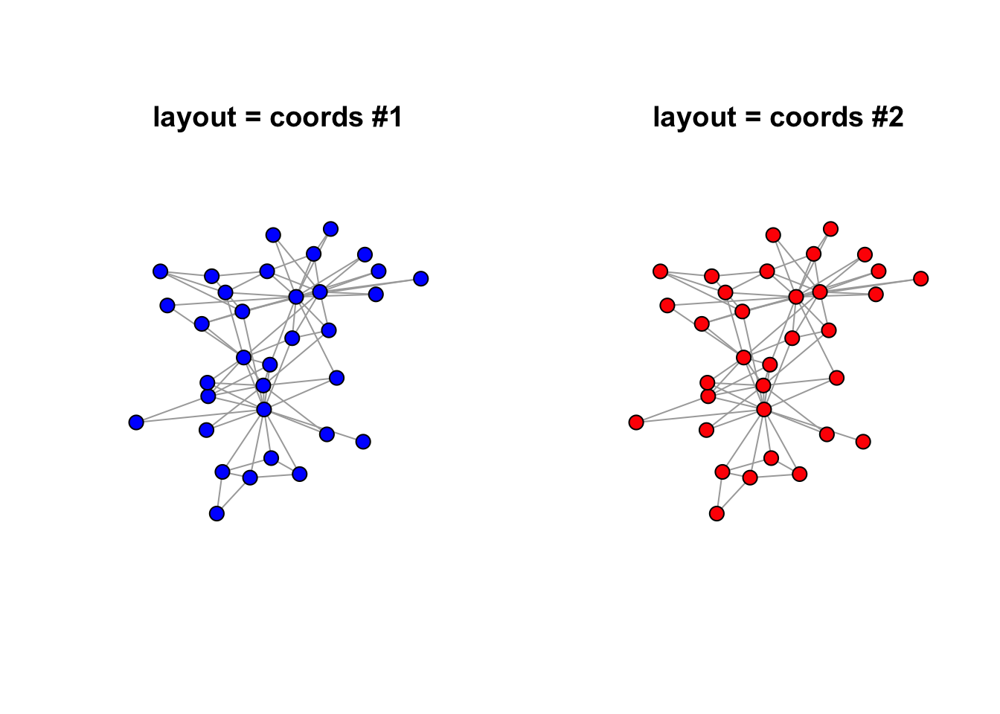

Chapter 1 igraph
igraph contains 773 functions. Three different plotting mechanisms exist: igraph for two dimensional plots, tkplot for interactive 2-dimensional plotting and rglplot which is for 3-dimensional plotting and is labeled as “experimental.” The igraph functions for two dimensional plots is the focus for the next * chapters.
1.1 Examples
1.1.1 Simple Graphs
The simple graph below was created from manual entry using igraph’s graph_from_literal function.

Figure 1.1: Graph (a) is two nodes connected by edge, graph (b) is two unconnected nodes, graph (c) is two nodes with a directional edge, graph (d) is two nodes with the directional edge reversed, graph (e) is two nodes with a bidirectional edge, graph (f) is two nodes connected by a weighted edge, graph (g) is a single node with a loop, and graph (h) is a multigraph.
1.1.2 Notable Graphs
Figure 1.2: Nine of 31 ‘Notable Graphs’ from ’make_graph()`
1.1.3 Complicated Graph
The complicated graph below was created from the Les Miserable resident dataset in igraph. (Knuth 1993) The data contains 77 nodes and 254 edges.
Figure 1.3: Network graph of the coappearnce of characters in Les Miserable.
1.2 Layout of Nodes
Nodes may be laid out in a variety of ways and many algorithms are available, depending on the data and the analyst’s personal preference. “It is important to realize that the information in graph layouts is contained in the pattern of which nodes are connected to which others. The locations . . . are chosen based on essentially aesthetic criteria.” (Borgatti, Everett, and Johnson 2018)
1.2.1 Consistent Plotting
Many of the igraph layouts are generated through an algorithm and the coordinates change each time it is plotted. Part of the iterative process in visualization is to change different graphing parameters to reach the most visually pleasing chart. Thus, drafters may want to keep the layout the same as colors, size, etc. are changed. To keep the layout the same, the set.seed() function must be set.
A second method to retain consistency in plotting is to retain the coordinates in a separate variable as opposed to the set.seed() strategy.
data("karate")
coords <- layout_with_fr(karate, niter = 1000)
par(mfrow=c(1, 2))
par(oma=c(0,0,2,0))
#Note layout set to "coords"
plot.igraph(karate, layout = coords, main = "layout = coords #1", vertex.label = NA, vertex.color = "blue")
plot.igraph(karate, layout = coords, main = "layout = coords #2", vertex.label = NA, vertex.color = "red")
1.2.2 More on Coordinates
## Warning: The `x` argument of `as_tibble.matrix()` must have column names if `.name_repair` is omitted as of tibble 2.0.0.
## Using compatibility `.name_repair`.
## This warning is displayed once every 8 hours.
## Call `lifecycle::last_warnings()` to see where this warning was generated.1.2.3 Available Layouts
According to the igraph documentation, 19 available layouts are available and include:
| layout_ | layout_as_bipartite | layout_as_star |
| layout_as_tree | layout_components | layout_in_circle |
| layout_nicely | layout_on_grid | layout_on_sphere |
| layout_randomly | layout_with_dh | layout_with_drl |
| layout_with_fr | layout_with_gem | layout_with_graphopt |
| layout_with_kk | layout_with_lgl | layout_with_mds |
| layout_with_sugiyama |
Plots were randomly generated from an adjacency matrix as illustrated by R-graph-gallery. The layout_nicely function is the default. (verify). The function
uses the layout_with_fr with graphs less than 1,000 vertices and the layout_with_drl for graphs greater than 1,000 vertices.

Figure 1.4: Examples of available layouts.
In plotting graphs with many nodes, the chosen layout will result in overlapping nodes. The challenge is in spreading the nodes out to the space available. One strategy was described in a stackoverflow question using the qgraph library. The code was was used to reproduce the plot below.
Figure 1.5: Node dispersion of the Fruchterman-Reingold (F-R) layout.
1.3 Attributes
Any chart is comprised of geoms. igraph allows for the color, size, shape to be set in of two ways. The first method is to supply named arguments to the plotting command, in the this case plot.igraph. The second method is to set the attributes via assignment to the vertex, edge or graph. According to the manual, assignments using the second method do not require “vertex” or “edge” to be prepended.
Some igraph attributes are treated specially like color, layout, name, shape, type, and weight. Use of these terms in code operations could result in the program producing surprising and unexpected results. The “best practice is to use attribute names starting with an uppercase letter to make sure that they have no influence on igraph’s internal functions.” (Csardi and Kolaczyk 2014)
Graph attributes are listed anytime the graph object is sent to the console. See section *. Othewise, attributes of the graph, vertices, and edges can be determed through three functions: (1) list.graph.attributes, (2) list.vertex.attributes, and (3) list.edge.attributes. The function length can be cumbersome and the following function may be helpful in list all of them at once. (???)
#
get_igraph_attrs <- function(igraph){
if(!is_igraph(igraph)) stop("Not a graph object")
list(graph_attrs = list.graph.attributes(igraph),
vertex_attrs = list.vertex.attributes(igraph),
edge_attrs = list.edge.attributes(igraph))
}
get_igraph_attrs(UKfaculty)#First Method -- supply named arguments to plot
plot.igraph(make_graph("Bull"),
vertex.shape = "square"
)
#Second Method -- set vertex attributes
g <- make_graph("Bull") %>%
set_vertex_attr(name = "shape",
value = "square")1.3.1 Vertices

Figure 1.6: Selected node attributes.
Figure 1.7: Additional node color palettes.
1.3.1.1 Shapes
1.3.1.2 Sizes
1.3.1.3 Colors
The argument to set the vertex color in the plot.igraph function is vertex.color. Like plots in base R, color may be set by a number (integer) or name (character) with the name being preferred. The default palette can be retrieved through ?igraph::categorical_pal(n). The colors are visible to those who are color-blind and is eight colors.
For plot.igraph and integer values, the default igraph palette is used (see the ‘palette’ parameter below. Note that this is different from the R palette.
If you don’t want (some) vertices to have any color, supply NA as the color name.
The default value is “SkyBlue2”.
1.3.2 Edges

Figure 1.8: Selected edge attributes.
References
Borgatti, Stephen P., Martin G. Everett, and Jeffrey C. Johnson. 2018. Analyzing Social Networks. 2nd ed. SAGE Publications Ltd.
Csardi, Gabor, and Eric D. Kolaczyk. 2014. Statistical Analysis of Network Data with R. New York: Springer.
Knuth, Donald Ervin. 1993. The Stanford GraphBase: A Platform for Combinatorial Computing. AcM Press New York.